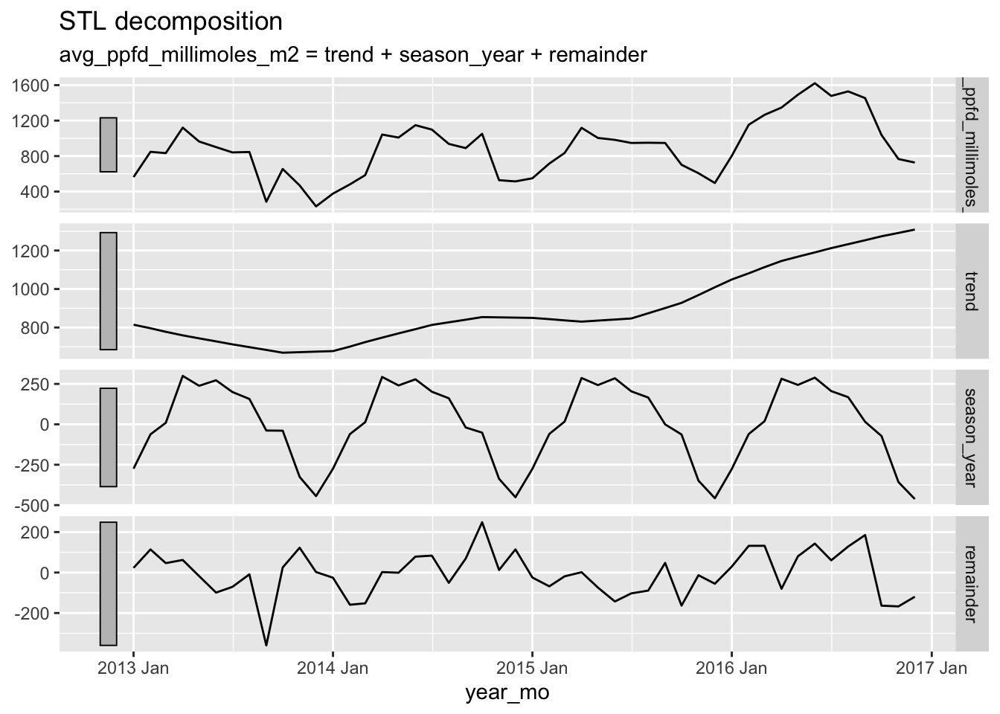
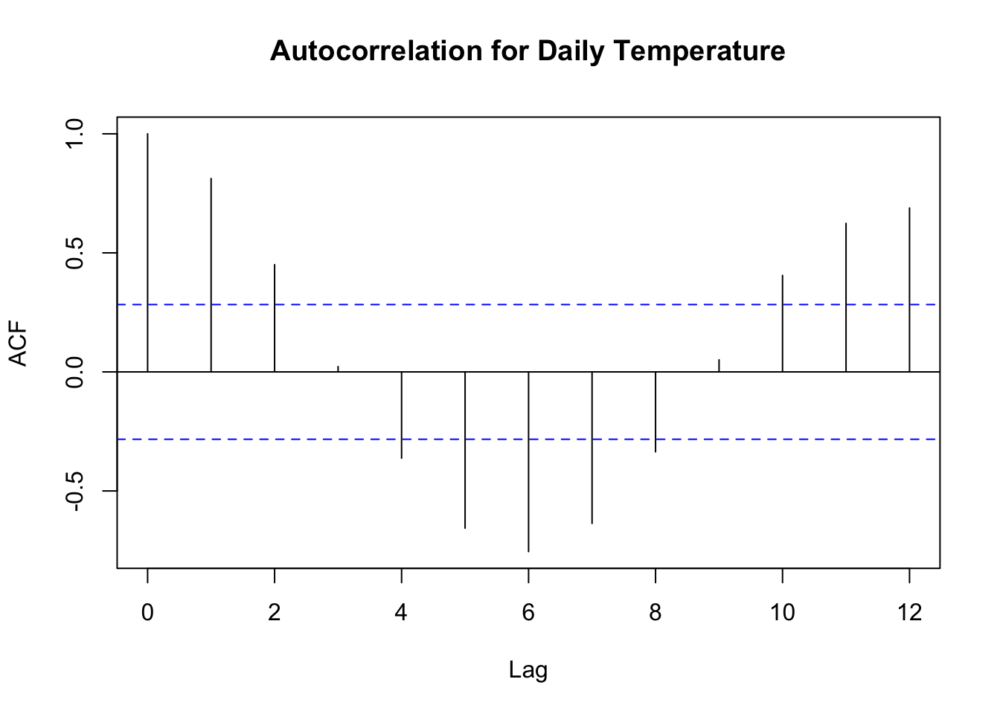
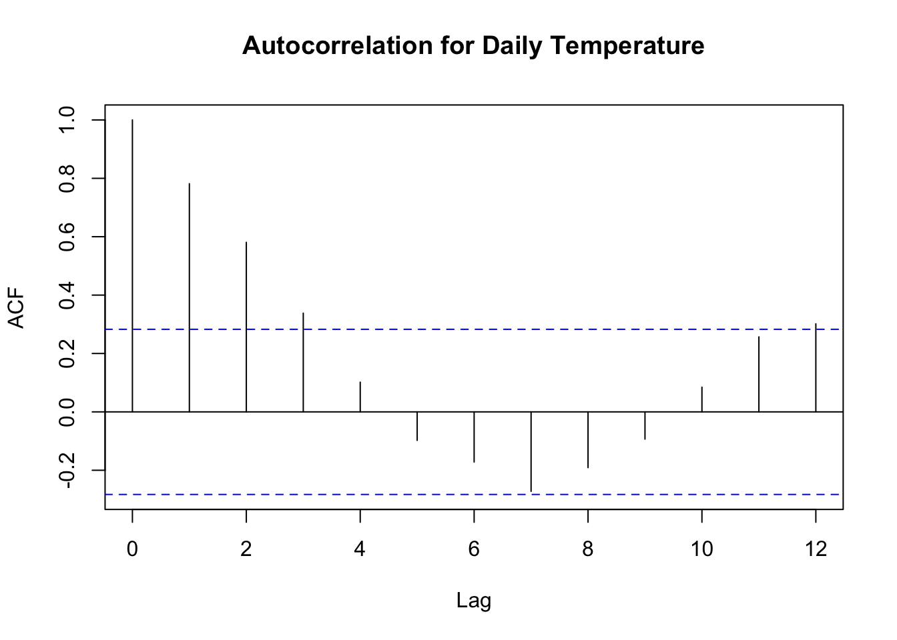

# data processing
library(tidyverse)
library(here)
library(janitor)
library(lubridate)
# plotting/aesthetics
library(gridExtra)
library(gt)
# time series packages
library(feasts)
library(tsibble)Tree Growth Draft
Background
The data collected spans the years 2012-2016 and measures tree diameter at breast height. During this time, there was a drought. My statistical analysis will evaluate 4 of the most commonly sampled tree species (maybe families) to see which fared better during the drought. I have added climate data to test for potential omitted variables bias. After creating the linear model, I’ll conduct a time series analysis to view the seasonality and trends in growth. Since the drought was over this entire period of time, it’s possible there will be a slow in growth for all species as the drought continues.
Load Libraries
Read in Data
# load tree data
dbh_raw <- read_csv(here('data/long.data.DBH.csv'))
initial_dbn <- read_csv(here('data/203-LFDPDendrometerData-Transposed.csv'))
# load daily climate data
clim_data_raw <- read_csv(here('data/EVFSTowerMetDaily_2023v2.csv'))
# read in hourly clim data
clim_1999_2014 <- read_csv(here("data/NADPTowerHourlyData1999_2014.csv")) %>% clean_names()
clim_2015_2023 <- read_csv(here('data/NADPTowerHourlyData2015_2023v2.csv')) %>% clean_names()Data Cleaning
Tree Growth Data
Dates are originally in Julian day and year, so these need to be converted to a date columm with the proper data type. Additionally, I checked for the most common species & created a subset of this tree type to potentially limit ommited variables bias.
# add family data to df
dbh_raw <- dbh_raw %>% mutate(family =
case_when(species == 'ALCFLO' ~ 'Euphorbiaceae',
species == 'ALCLAT' ~ 'Euphorbiaceae',
species == 'ANDINE' ~ 'Fabaceae-papilionoideae',
species == 'CALCAL' ~ 'Clusiaceae',
species == 'CASARB' ~ 'Salicaceae',
species == 'CASSYL' ~ 'Salicaceae',
species == 'CORSUL' ~ 'Boraginaceae',
species == 'CROPOE' ~ 'Euphorbiaceae',
species == 'CYAARB' ~ NA,
species == 'DACEXC' ~ 'Burseraceae',
species == 'DENARB' ~ 'Araliaceae',
species == 'DRYGLA' ~ 'Putranjivaceae',
species == 'EUGDOM' ~ 'Myrtaceae',
species == 'GUAGUI' ~ 'Meliaceae',
species == 'GUEVAL' ~ 'Rubiaceae',
species == 'GUTCAR' ~ 'Annonaceae',
species == 'HOMRAC' ~ 'Salicaceae',
species == 'INGLAU' ~ 'Fabaceae-mimosoideae',
species == 'MANBID' ~ 'Sapotaceae',
species == 'MATDOM' ~ 'Sapindaceae',
species == 'MELHER' ~ 'Sabiaceae',
species == 'MIRCHR' ~ 'Sapotaceae',
species == 'SAPLAU' ~ 'Euphorbiaceae',
species == 'SLOBER' ~ 'Elaeocarpaceae',
species == 'TABHET' ~ 'Bignoniaceae'))# view the number of entries per species
family_count <- plyr::count(dbh_raw$family)
# clean data
dbh <- dbh_raw %>%
mutate(date = as.Date(paste(year, doy, sep="-"),"%Y-%j")) %>%
rename(dbh_mm = dbh) %>% #add units to diameter col
filter(family == 'Burseraceae' | family == 'Salicaceae' |
family == 'Sapotaceae' | family == 'Euphorbiaceae') %>%
select(-(c('doy', 'year', 'flag')))#families w/most data
# date frame that includes daily mean diameter
mean_dbh <- dbh %>%
group_by(date,family) %>% #group by date and family
mutate(mean_daily_dbh = mean(dbh_mm, na.rm = TRUE)) #calculate mean
# asses NAs in each column
colSums(is.na(dbh)) tag species gx gy transect dbh_mm family date
0 0 0 0 0 208 0 0 Climate Daily
Climate data ranges from 2000-2022 and needs to be limited to the time period where data on trees was collected. There is more meteorological data than needed, so I selected key columns of interest. I might relate rain to growth, and then add ppfd_millimoles_m2 as a potential omitted variable. This is “photosynthetic photon flux density” which is a measure of photosynthetically active photons (400-700nm) hitting a surface per unit area per unit time. In my own words, this is a measure of the presence of photons that can be utilized for photosynthesis, since not all wavelengths are used by plants.
# clean data
clim_data <- clim_data_raw %>%
clean_names() %>%
filter(year > 2011 & year <= 2016) %>% #select drought years
select(c('date', 'year', 'rain_mm', 'tempmax_degreescelsius', 'ppfd_millimoles_m2')) %>% #select columns of interest for glm
rename('max_temp_c' = 'tempmax_degreescelsius')
# asses number of NAs for each variable
colSums(is.na(clim_data)) date year rain_mm max_temp_c
1112 0 147 285
ppfd_millimoles_m2
211 Climate Hourly
Based on the is.na() assesment, there are a lot of missing dates for the daily data. I loaded the hourly data to see if I could calculate a rolling average with more accurate dates. Hourly had less NA values, so I removed the daily climate items from my environment, but left them in the code in case I needed it later.
# 1999-2014 clean and filter
hourly_clim_a <- clim_1999_2014 %>%
mutate(datetime = mdy_hm(datetime)) %>%
filter(year(datetime) > 2011) %>%
select(c('datetime', 'rain_mm', 'temp_air_degrees_c', 'ppfd_millimoles_m2_hour')) %>%
rename('temp_c' = 'temp_air_degrees_c')
# 2015-2023 clean and filter
hourly_clim_b <- clim_2015_2023 %>%
mutate(datetime = ymd_hms(datetime)) %>%
filter(year(datetime) < 2017) %>%
select(c('datetime', 'rain_mm_tot', 'air_tc_avg', 'par_tot')) %>%
rename('rain_mm' = 'rain_mm_tot',
'temp_c' = 'air_tc_avg',
'ppfd_millimoles_m2_hour' = 'par_tot')
# check column names match
colnames(hourly_clim_a) == colnames(hourly_clim_b)[1] TRUE TRUE TRUE TRUE# bind df together
hourly_clim <- rbind(hourly_clim_a, hourly_clim_b)
# assess NAs
colSums(is.na(hourly_clim)) datetime rain_mm temp_c
0 1086 3182
ppfd_millimoles_m2_hour
2958 # calculate rolling average (hourly -> daily)
daily_clim <- hourly_clim %>%
group_by(date = date(datetime)) %>%
summarise(tot_rain_mm = sum(rain_mm, na.rm = TRUE),
avg_temp_c = mean(temp_c, na.rm = TRUE),
avg_ppfd_millimoles_m2 = mean(ppfd_millimoles_m2_hour, na.rm = TRUE)) %>%
mutate(year_mo = yearmonth(date))# remove raw data + vars that won't be used
rm(clim_1999_2014, clim_2015_2023, clim_data, clim_data_raw, dbh_raw, family_count, hourly_clim_a, hourly_clim_b)Data Exploration
Tree Growth Data
The tree growth data has less missing values, so I decided to start my exploration with this. Here, I’m primarily looking for slower growth as time goes on, since the drought likely increased in severity.
All diameters over time:
# plot diameter breast height over time
ggplot(dbh, aes(x=date, y = dbh_mm, col = family)) +
geom_point() + theme_minimal() + facet_wrap(~family) + geom_smooth(color='black')
Mean diameter over time:
Samples were taken all on the same day, so grouping by date and family produces the mean dbh for a specific day. Based on this alone, it’s hard to see growth over time, likely because taking the mean of a wide variety of diameters diminishes the trend slightly.
# create plots for each family (facet wrap makes growth hard to see)
bur_plt <- mean_dbh %>%
filter(family == 'Burseraceae') %>%
ggplot(aes(x = date, y = mean_daily_dbh)) +
geom_point() +
labs(title = 'Burseraceae')
sal_plt <- mean_dbh %>%
filter(family == 'Salicaceae') %>%
ggplot(aes(x = date, y = mean_daily_dbh)) +
geom_point() +
labs(title = 'Salicaceae')
sap_plt <- mean_dbh %>%
filter(family == 'Sapotaceae') %>%
ggplot(aes(x = date, y = mean_daily_dbh)) +
geom_point() +
labs(title = 'Sapotaceae')
eup_plt <- mean_dbh %>%
filter(family == 'Euphorbiaceae') %>%
ggplot(aes(x = date, y = mean_daily_dbh)) +
geom_point() +
labs(title = 'Euphorbiaceae')
# plot all families
grid.arrange(bur_plt, sal_plt, sap_plt, eup_plt, nrow = 2, ncol = 2)
Climate Data
Now I’m going to look at climate variables of interest over time. There is a lot of data that has a year, but not a specific day.
Plot climate variables over time:
rain <- ggplot(daily_clim, aes(x = yearmonth(date), y = tot_rain_mm)) +
geom_col(fill = 'steelblue1') + theme_minimal() +
labs(x = 'Month',
y = 'Monthly Rain (mm)')
temp <- ggplot(daily_clim, aes(x = yearmonth(date), y = avg_temp_c)) +
geom_col(fill = 'firebrick') + theme_minimal() +
labs(x = 'Month',
y = 'Avg Monthly Temp (C)')
ppfd <- ggplot(daily_clim, aes(x = yearmonth(date), y = avg_ppfd_millimoles_m2)) +
geom_col(fill = 'palegreen3') + theme_minimal() +
labs(x = 'Month',
y = 'Photosynthetic Flux Density (millimoes/m2)')
grid.arrange(rain, ppfd, temp, ncol = 2)Time Series Analysis
Climate Variable Decomposition
Preparation:
The feasts() package was not working with large gaps in the data, and unfortunately were was missing data for the last 3 months of 2012, and February 2014. To skip the 2012 gap, I simply removed that year from the analysis. I then created a new data frame that averaged by year-month, to run the decomposition analysis.
# find what months/years are missing data (cant run decomp w/missing data)
lapply(split(daily_clim,format(as.Date(daily_clim$date),"%Y")),
function(x) month.name[setdiff(seq(12),as.numeric(format(as.Date(x$date),"%m")))])$`2012`
[1] "October" "November" "December"
$`2013`
character(0)
$`2014`
character(0)
$`2015`
character(0)
$`2016`
character(0)# create year_mon averages, excluding 2012
mon_clim <- hourly_clim %>%
filter(year(datetime) > 2012) %>%
group_by(year_mo = yearmonth(datetime)) %>%
summarise(tot_rain_mm = sum(rain_mm, na.rm = TRUE),
avg_temp_c = mean(temp_c, na.rm = TRUE),
avg_ppfd_millimoles_m2 = mean(ppfd_millimoles_m2_hour, na.rm = TRUE)) %>% as_tsibble(index = year_mo)Rain decomposition:
# create rain decomp
rain_dcmp <- mon_clim %>%
model(STL(tot_rain_mm))
# plot
components(rain_dcmp) %>% autoplot()
Temperature decomposition:
For temperature and ppfd there was no data for February 2014, to avoid removing another entire year I took the average of January and March 2014 and filled in the individual cell values.
# fill data for Feb 2014
mon_clim[14, 3] = (21.89624+22.24512)/2
mon_clim[14, 4] = (376.9210+584.9981)/2temp_dcmp <- mon_clim %>%
model(STL(avg_temp_c))
components(temp_dcmp) %>% autoplot()Photosynthetic Flux Density Decomposition:
ppfd_dcmp <- mon_clim %>%
model(STL(avg_ppfd_millimoles_m2))
components(ppfd_dcmp) %>% autoplot()
Climate Variable Autocorrelation
Only average temperature showed strong seasonality patterns, so I used it as an autocorrelation example. The autocorrelation plots for rain and ppfd are commented out.
acf(mon_clim$avg_temp_c, lag.max = 12, na.action = na.pass, main = 'Autocorrelation for Daily Temperature')
# acf(mon_clim$tot_rain_mm, lag.max = 12, na.action = na.pass, main = 'Autocorrelation for Daily Rain')
#
# acf(mon_clim$avg_ppfd_millimoles_m2, lag.max = 12, na.action = na.pass, main = 'Autocorrelation for PPFD')acf(mon_clim$avg_ppfd_millimoles_m2, lag.max = 12, na.action = na.pass, main = 'Autocorrelation for Daily Temperature')
Statistical Analysis
To begin, I am going to conduct linear model using time as one of my components. I will then add climate variables to see if they improve the model
Linear Model - Only DBH
Base model: This model looks at daily dbh for all four families, unsurprisingly the intercept is very low. This is likely because the averages minimize any notable changes in growth, as we saw in the initial plot
simple_model <- lm(mean_daily_dbh ~ date, data = mean_dbh)
summary(simple_model)
Call:
lm(formula = mean_daily_dbh ~ date, data = mean_dbh)
Residuals:
Min 1Q Median 3Q Max
-112.581 -54.913 4.165 64.118 82.774
Coefficients:
Estimate Std. Error t value Pr(>|t|)
(Intercept) 1.234e+02 5.187e+01 2.378 0.0174 *
date 5.616e-03 3.146e-03 1.785 0.0743 .
---
Signif. codes: 0 '***' 0.001 '**' 0.01 '*' 0.05 '.' 0.1 ' ' 1
Residual standard error: 55.2 on 2968 degrees of freedom
Multiple R-squared: 0.001073, Adjusted R-squared: 0.000736
F-statistic: 3.187 on 1 and 2968 DF, p-value: 0.07434Family Models: Creating models for individuals species…
# create family subsets
bur <- mean_dbh %>% filter(family == 'Burseraceae')
sap <- mean_dbh %>% filter(family == 'Sapotaceae')
eup <- mean_dbh %>% filter(family == 'Euphorbiaceae')
sal <- mean_dbh %>% filter(family == 'Salicaceae')# run models for all
bur_model <- lm(mean_daily_dbh ~ date, data = bur)
sap_model <- lm(mean_daily_dbh ~ date, data = sap)
eup_model <- lm(mean_daily_dbh ~ date, data = eup)
sal_model <- lm(mean_daily_dbh ~ date, data = sal)
# view results
summary(bur_model)
Call:
lm(formula = mean_daily_dbh ~ date, data = bur)
Residuals:
Min 1Q Median 3Q Max
-2.2224 -1.2323 -0.9975 -0.6181 17.6370
Coefficients:
Estimate Std. Error t value Pr(>|t|)
(Intercept) 1.935e+02 5.172e+00 37.41 <2e-16 ***
date 5.325e-03 3.137e-04 16.97 <2e-16 ***
---
Signif. codes: 0 '***' 0.001 '**' 0.01 '*' 0.05 '.' 0.1 ' ' 1
Residual standard error: 3.401 on 1132 degrees of freedom
Multiple R-squared: 0.2029, Adjusted R-squared: 0.2022
F-statistic: 288.1 on 1 and 1132 DF, p-value: < 2.2e-16summary(sap_model)
Call:
lm(formula = mean_daily_dbh ~ date, data = sap)
Residuals:
Min 1Q Median 3Q Max
-15.4318 -0.4571 -0.2015 0.4429 8.2532
Coefficients:
Estimate Std. Error t value Pr(>|t|)
(Intercept) 1.236e+02 4.975e+00 24.852 < 2e-16 ***
date 2.232e-03 3.018e-04 7.396 4.04e-13 ***
---
Signif. codes: 0 '***' 0.001 '**' 0.01 '*' 0.05 '.' 0.1 ' ' 1
Residual standard error: 2.574 on 700 degrees of freedom
Multiple R-squared: 0.07247, Adjusted R-squared: 0.07115
F-statistic: 54.69 on 1 and 700 DF, p-value: 4.038e-13summary(eup_model)
Call:
lm(formula = mean_daily_dbh ~ date, data = eup)
Residuals:
Min 1Q Median 3Q Max
-36.199 -0.112 0.712 0.881 14.674
Coefficients:
Estimate Std. Error t value Pr(>|t|)
(Intercept) 1.159e+02 1.333e+01 8.697 < 2e-16 ***
date 6.319e-03 8.086e-04 7.816 4.25e-14 ***
---
Signif. codes: 0 '***' 0.001 '**' 0.01 '*' 0.05 '.' 0.1 ' ' 1
Residual standard error: 5.41 on 430 degrees of freedom
Multiple R-squared: 0.1244, Adjusted R-squared: 0.1224
F-statistic: 61.08 on 1 and 430 DF, p-value: 4.245e-14summary(sal_model)
Call:
lm(formula = mean_daily_dbh ~ date, data = sal)
Residuals:
Min 1Q Median 3Q Max
-62.214 -2.475 0.598 4.334 14.022
Coefficients:
Estimate Std. Error t value Pr(>|t|)
(Intercept) 14.394158 18.015487 0.799 0.425
date 0.009039 0.001093 8.273 6.6e-16 ***
---
Signif. codes: 0 '***' 0.001 '**' 0.01 '*' 0.05 '.' 0.1 ' ' 1
Residual standard error: 9.32 on 700 degrees of freedom
Multiple R-squared: 0.08906, Adjusted R-squared: 0.08776
F-statistic: 68.44 on 1 and 700 DF, p-value: 6.597e-16Decomposing DBH
In addition to the climate variables, it is also useful to conduct a decomposition of diameter breast height for. Not sure if I’ll do this because the data is not consistent enough, maybe I can try an actual rolling average before the decomp this time.